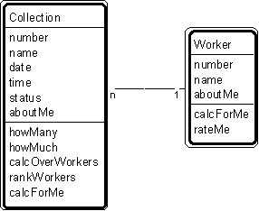

Patt#1. "Collection-Worker" Pattern // the fundamental pattern

Overview
- Collection-worker is the fundamental object-model pattern.
- All other object-model patterns are variations on this theme.
Typical object interactions
- howMany --> calcForMe - howMuch --> calcForMe
- calcOverWorkers -->calcForMe
- rankWorkers -->rateMe
Other notes - "aboutMe" helps one think about what other attributes might be needed - "calcForMe" helps one think about what specific calculations might be needed - "rankMe" helps one think about what ordering or comparison services might be - "rateMe" helps one think about what self-assessment services might be needed
Related strategy: Str#21. "Select Collections of Objects" Strategy